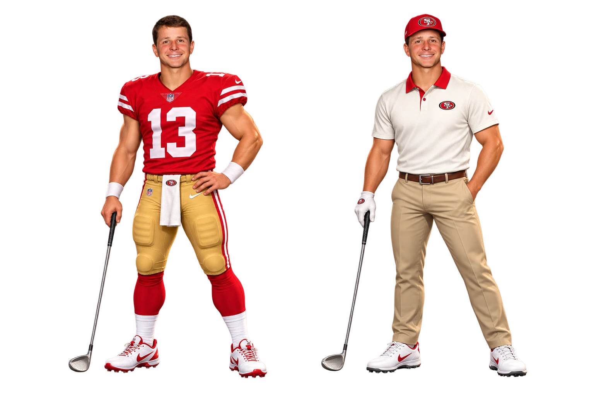
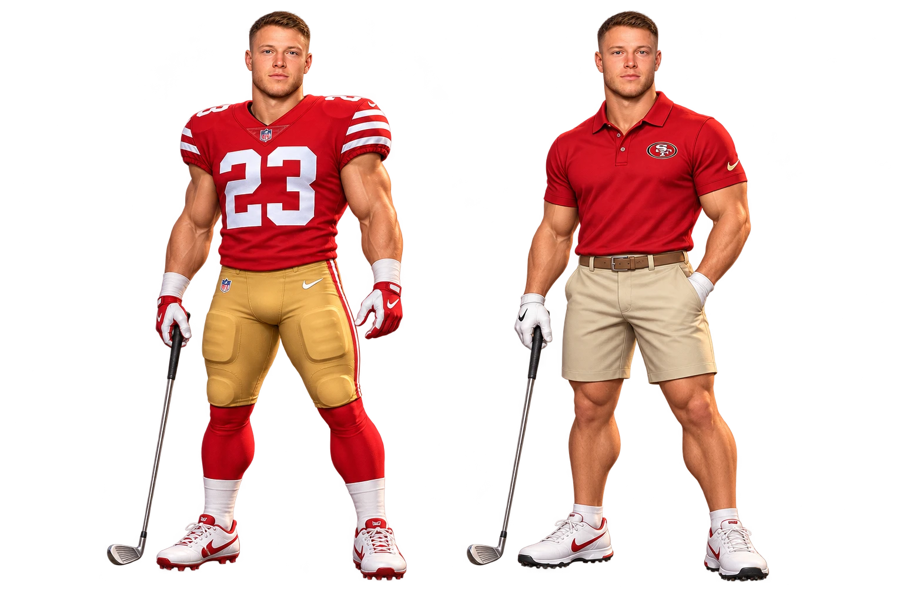
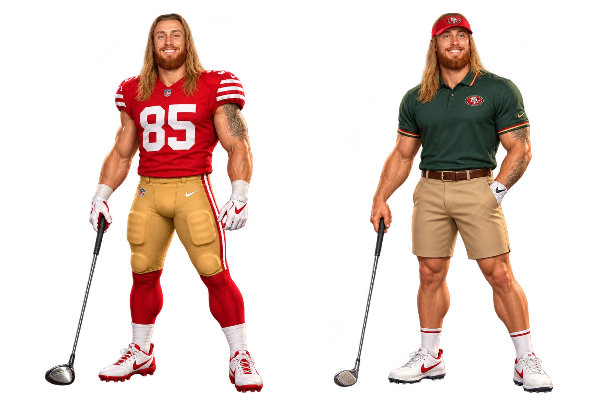

13 / Brock Purdy

THE FAITHFUL ON THE FAIRWAY
Three players. Two looks each. Football uniforms and Niners golf attire.



These costume sheets are used in player selection and on the course. Unofficial fan artwork created for Chaising Birdies.